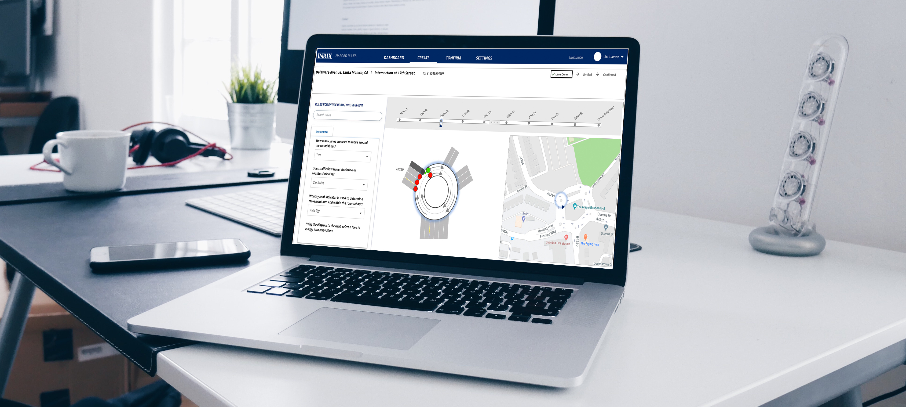
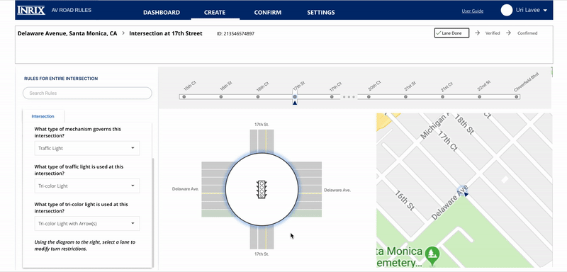

Digitizing Road Rules
Allowing cities to map the rules of the road for use with autonomous vehicles and curbside management

After finding success as a company working in location-based traffic and parking data, INRIX was in the early stages of extending their reach into the autonomous vehicle (AV) field. Their data was useful to automakers in optimizing navigation techniques, however there was still room to become a leader in the new exponentially-growing industry. Their foray into the AV field began with the idea to delineating cities as a digital map: inputting all of a city’s data as a collection of nodes and lines which would correspond to real-life attributes and that an AV could read and improve its driving capabilities. A beta version of the platform was developed to test their assumption of the value of a platform like this and was proved correct: there was mutual interest from automobile makers and municipalities on collecting data in such a way. Their challenge was translating their bare-bones beta product into a working deliverable that users would want to use.

I was brought on to take the existing product to this next level. I began the process by conducting extensive user interviews with partners who had received the beta version. By sitting with the users and watching them perform tasks on the existing platform, I was able to deduce what aspects were working and which were misguided. The user testing was supplemented with discussions with each of the users. Being a beta product that was being tested, there were known limitations in its scope. The product which I was to design would be more robust and include additional features and intricacies, so it was important to not just test the existing product but to also learn from them what additions would make the product more complete from a user’s perspective.
The results of the user testing were then brought before the INRIX board and AV Road Rules team, where I presented the findings of the testing and a competitive analysis of the industry. I also outlined potential strategies for the platform going forward, showing how to distinguish the product in the market while still achieving the primary goals set forth, including low-res mockups of a potential product.

Receiving approval from the shareholders I proceeded to mock-up designs based on my initial conception art and the feedback I got. I created some basic wireframes in Balsamiq, outlining the journey a user would experience on the site and functions the platform would support. After iterating on the wireframes and conceptual art, a direction was settled on and I began creating high resolution designs in Sketch. Creating an open dialogue with the Road Rules team was essential as I iterated the designs and worked with them on balancing functionality with engineer bandwidth constraints and time deadlines. Because of these constraints I created mockups that would be used for the version 1.0 build as well as conceptual designs for future versions, utilizing feedback I had gotten that was out of scope but important to the larger vision of the product.
The result of the design process was v1.0 that was shared with over 50 partner cities for them to begin digitally mapping their roadways and infrastructure. It was a fully functioning platform that allowed all functionality to be input digitally into the system. These partner cities will concurrently serve as the next round of user testing, and will spend the next six months mapping their cities as well as participating in user testing sessions that will help improve the system for later versions.